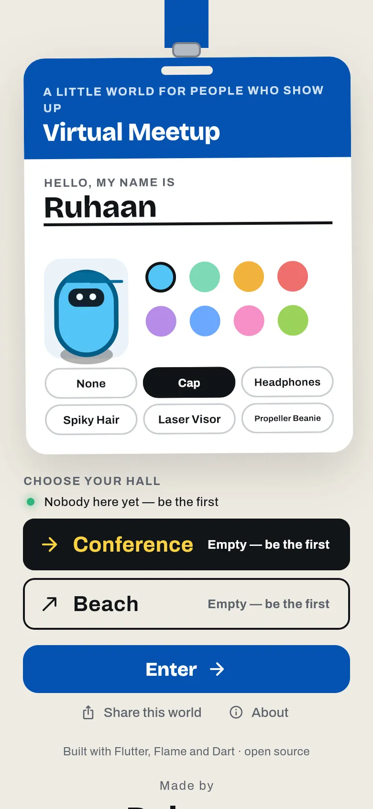
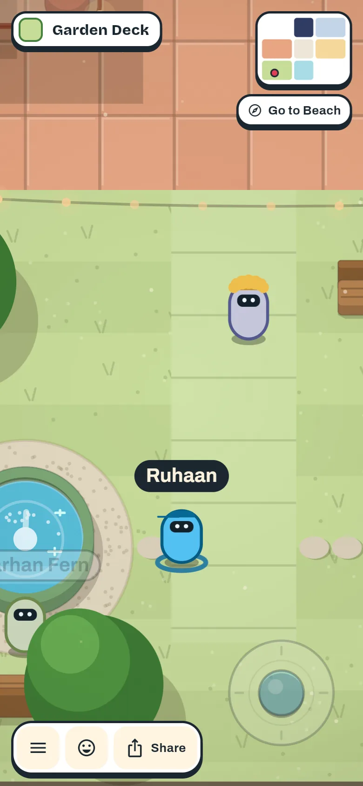

About
Virtual Meetup
A little world for people who show up. Open a link on your phone, fill in a conference badge, and walk around one shared map with everyone else at the event.
Walk in →About
A little world for people who show up. Open a link on your phone, fill in a conference badge, and walk around one shared map with everyone else at the event.
Walk in →

The name on the badge, the lines around it, the code lab's projector, the hall's screen, the sponsor booths and the QR code in the corner are all set from a moderator screen while the event is running. No rebuild and no redeploy, just a reload. The same screen can mute a name, kick someone or ban them.